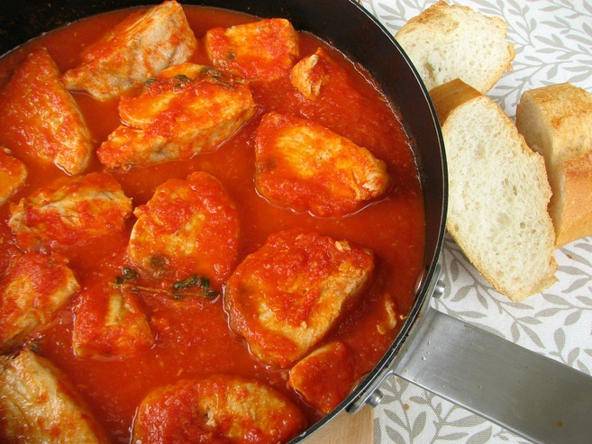

- 500 gr de atún fresco
- Tomate frito casero (lo suficiente como para dejar el atún cubierto hasta la mitad)
- 1 cebolla grande ó 2 cebollas medianas
- Vino tinto para cocinar
- Sal y pimienta
- Aceite de oliva virgen extra
- Guindilla cayena (opcional)
- 2/3 dientes de ajo
- Cortar la cebolla en láminas de medio centímetro por lado aproximadamente
- Picar el ajo finamente
- Cortar el atún en tacos uniformes del tamaño de dos dedos de grosor aproximadamente
- Poner una cazuela baja al fuego y calentar a fuego medio-fuerte con abundante aceite de oliva
- Sofreír las la cebolla y el ajo hasta que la cebolla quede pochada, sin que el ajo se queme (en este punto podría echarse la cayena)
- Echar el tomate frito y un vaso de vino (250mL)
- Dejar que el alcohol se evapore y que la salsa reduzca un poco
- Introducir los tacos de atún y dejar cocer 3-4 minutos, luego se les da la vuelta y se les deja cocer otros 3-4 minutos
- Dejar reposar la cazuela unos 3 minutos fuera del fuego
- Emplatar y disfrutar